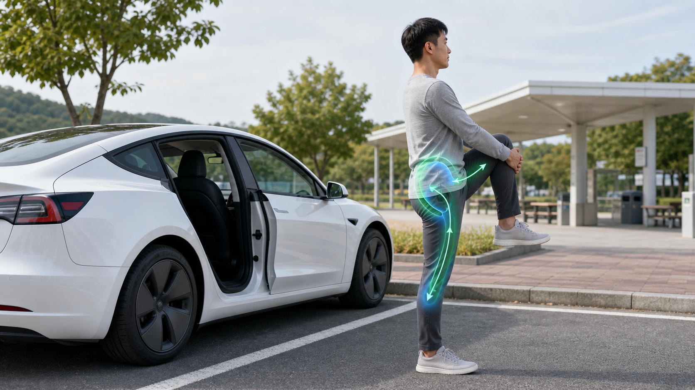

案例库¶
本页用于把个人驾驶不适转化为可比较、可复盘的结构化案例。案例不是医学诊断，而是记录座椅几何、身体反馈和调整结果之间的关系。
案例记录原则¶
每个案例至少包含：
- 车型与座椅版本；
- 身高、体重、腿长或体型描述；
- 初始座椅设置；
- 主要不适位置；
- 出现不适的时间点；
- 办公椅或其他座椅是否也有类似症状；
- 每次只改变一个变量；
- 至少 3 次驾驶后再判断保留或回退。
不建议记录：
- 个人隐私信息；
- 医学诊断结论；
- 无法复现的一次性体感；
- 同时改变多个变量后的笼统结论。
Case 001：当前设置与小步验证¶
详细记录见：Case001 当前设置。
主要问题¶
- 坐骨单点疼已通过前沿调整有所减轻；
- 坐骨两侧软组织挤压仍需观察；
- 大腿后侧紧硬与右腿踩踏负荷可能叠加；
- 办公椅反馈需要同步记录，避免把全部问题归因于车座。
当前策略¶
先保留已改善坐骨单点疼的设置
↓
座椅高度小幅上调
↓
观察坐骨两侧软组织和大腿后侧
↓
必要时再后移 1 cm
↓
用 3 次驾驶判断保留或回退
需要记录的关键指标¶
| 指标 | 观察目的 |
|---|---|
| 坐骨单点疼 | 判断峰值压强是否下降 |
| 坐骨两侧挤压 | 判断侧翼和软组织关系 |
| 大腿后侧紧硬 | 判断高度或前沿是否过量 |
| 右腿踩踏自然度 | 判断前后位置和脚跟支点 |
| 下车后恢复时间 | 区分短暂压迫与持续刺激 |
Case 002：低坐姿导致坐骨后缘疼¶
背景¶
驾驶者坐姿偏低，髋部低于膝部，靠背偏躺。前 10 分钟尚可，30 分钟后坐骨后缘和尾骨方向开始不适。
可能机制¶
- 骨盆后倾；
- 坐骨受力偏向后缘；
- 大腿后侧参与承重不足；
- 右脚踩踏板时骨盆需要额外稳定。
验证路径¶
- 座椅高度上调一小格或约 1 cm。
- 靠背略直，但不要求挺腰。
- 保持前沿不变，避免同时增加大腿后侧压力。
- 连续记录 3 次 30 到 60 分钟驾驶。
保留信号¶
- 坐骨后缘疼推迟或减轻；
- 腰背更容易贴合；
- 右脚踩踏板不需要前探；
- 大腿后侧只是承托感，没有麻刺。
Case 003：前沿过高导致大腿后侧麻刺¶
背景¶
驾驶者为了减轻坐骨痛，抬高坐垫前沿。短时间坐骨更舒服，但 40 分钟后大腿后侧紧硬，接近腘窝处有麻刺。
可能机制¶
- 前沿过高；
- 大腿后侧局部压迫；
- 脚跟支点不稳定；
- 右腿踩油门时腘绳肌持续低强度收缩。
验证路径¶
- 前沿回落一小格。
- 检查座椅是否过近，必要时后移 1 cm。
- 观察坐骨单点疼是否重新出现。
- 记录麻刺是否在下车后快速消失。
回退信号¶
- 出现持续麻木；
- 疼痛向小腿放射；
- 下车后仍不缓解；
- 右腿明显无力。
出现以上信号时，应减少暴露并咨询医生或物理治疗师。
Case 004：座椅过近导致大腿根横向压力¶
背景¶
驾驶者上车后觉得刹车和油门都很容易够到，但 20 到 30 分钟后大腿根出现一条横向压力，右腿踩油门时更明显。
可能机制¶
- 座椅前后位置过近；
- 髋关节角度过小；
- 大腿根被坐垫前部和身体重量共同挤压；
- 右脚踩踏时大腿后侧持续稳定。
验证路径¶
- 座椅后移 1 cm。
- 同时把方向盘略向驾驶者方向拉近，避免身体前探。
- 检查刹车到底时膝盖仍有弯曲。
- 记录大腿根压力和右腿疲劳是否下降。
保留信号¶
- 大腿根横向压力下降；
- 右脚控制更自然；
- 坐骨单点疼不复发；
- 腰背仍能贴合靠背。
Case 005：腰托过强导致身体被推向前¶
背景¶
驾驶者为了改善腰部空隙，把腰托调得很明显。刚上车腰有支撑感，但开一会儿后大腿根压力增加，身体有被往前推的感觉。
可能机制¶
- 骨盆尚未稳定，腰托直接顶住腰背；
- 上身被推离靠背自然承托区；
- 骨盆和大腿根被迫重新找支点；
- 坐骨两侧软组织挤压加重。
验证路径¶
- 先把腰托降到轻微接触。
- 重新坐深，确认肩背可以靠住。
- 再用很小幅度增加腰托。
- 观察大腿根和坐骨两侧是否减轻。
回退信号¶
- 腰被硬顶；
- 身体前滑；
- 大腿根压力上升；
- 右腿踩踏板更累。
Case 006：办公久坐放大驾驶不适¶
背景¶
驾驶者周末开车 60 分钟尚可，工作日下午开车 30 分钟就出现大腿后侧紧硬和坐骨两侧挤压。
可能机制¶
- 白天连续久坐降低软组织耐受性；
- 腘绳肌和臀肌张力升高；
- 上车前身体已经处在高敏感状态；
- 车座只是放大器，不是唯一原因。
验证路径¶
- 连续 7 天记录最长连续办公久坐时间。
- 每 30 到 45 分钟起身 2 分钟。
- 上车前做 1 分钟骨盆前后摆动。
- 比较工作日和周末驾驶评分。
保留信号¶
- 工作日下午驾驶耐受时间延长；
- 大腿后侧评分下降；
- 下车后恢复更快；
- 座椅不需要每天重新调整。
Case 007：坐垫侧翼放大臀部软组织挤压¶
背景¶
驾驶者坐得越深，越感觉坐骨两侧软组织被夹住；坐骨尖点不明显，但侧边压迫感明显。
可能机制¶
- 坐垫侧翼限制臀部软组织横向展开；
- 骨盆后倾让软组织更靠近侧翼；
- 臀肌紧张让软组织不容易铺开；
- 右腿踏板控制让右侧更敏感。
验证路径¶
- 座椅整体升高 1 cm，观察骨盆是否更稳定。
- 不要继续大幅抬高前沿。
- 加入臀肌放松和坐姿 4 字拉伸。
- 对比左侧与右侧挤压评分。
继续观察信号¶
- 挤压从 6 分下降到 4 分；
- 没有麻刺；
- 坐骨单点疼不复发；
- 右脚控制没有变差。
Case 008：长途驾驶 90 分钟后才出现累积痛¶
背景¶
驾驶者 30 到 60 分钟内基本正常，但 90 分钟后坐骨和大腿后侧同时不适。
可能机制¶
- 座椅设置不一定明显错误；
- 软组织持续受压后的耐受上限被触发；
- 长时间右腿动态控制造成累积疲劳；
- 中途缺少姿势重置。
验证路径¶
- 不急于改变座椅。
- 每 45 到 60 分钟停车活动 3 分钟。
- 记录休息前后评分差异。
- 只在休息仍无效时再微调高度或前后。
长途驾驶中的“休息”不是失败，而是实验变量。若停车活动后第二段驾驶评分明显下降，说明座椅设置之外还存在组织耐受和姿势重置问题。

保留信号¶
- 中途活动后第二段驾驶评分下降；
- 下车后无残留；
- 第二天没有加重；
- 短途驾驶无需频繁调整。
Case 009：方向盘太远导致身体前探¶
背景¶
驾驶者座椅前后位置看似合适，但双手扶方向盘时肩膀离开靠背，开久后腰背和大腿后侧都紧。
可能机制¶
- 方向盘距离过远；
- 上身前探使靠背支撑失效；
- 骨盆为了稳定上身产生代偿；
- 右腿也参与稳定躯干。
验证路径¶
- 保持座椅前后不变。
- 先把方向盘向驾驶者方向拉近。
- 检查肩膀是否能自然靠回靠背。
- 记录腰背贴合和右腿疲劳评分。
保留信号¶
- 肩背能持续贴合；
- 腰背紧张下降；
- 右腿不需要额外绷紧；
- 踏板安全不受影响。
Case 010：换到 Model Y 后坐骨改善但右腿仍累¶
背景¶
驾驶者从 Model 3 换到更高坐姿车型后，坐骨后缘疼明显减轻，但右腿踩油门疲劳仍存在。
可能机制¶
- 更高坐姿改善了髋膝关系和骨盆后倾；
- 坐骨峰值压强下降；
- 但右脚连续控制电门的动态负荷仍然存在；
- 问题从“坐姿压力”转向“踏板控制耐受”。
验证路径¶
- 不把右腿疲劳继续归因于坐骨压力。
- 优先检查脚跟支点和前后位置。
- 记录离开油门后的压力变化。
- 加入小腿、腘绳肌和臀肌放松。
保留信号¶
- 坐骨疼稳定下降；
- 右腿疲劳通过脚跟和前后微调改善；
- 不需要大幅改变靠背和腰托；
- 长途驾驶后恢复更快。
后续案例收集模板¶
后续案例最好保持统一字段：车型、身高体重、座椅设置、驾驶时长、症状评分、调节幅度和保留 / 回退结果。结构一致，后面才方便横向比较。
## Case XXX：一句话描述
### 基本信息
- 车型：
- 身高 / 体重：
- 驾驶时长：
- 初始座椅设置：
- 办公椅是否类似：
### 主要症状
- 坐骨：
- 大腿后侧：
- 右腿：
- 腰背：
### 调整记录
| 日期 | 调整 | 5 分钟 | 30 分钟 | 60 分钟 | 结论 |
|---|---|---|---|---|---|
| | | | | | |
### 初步机制
### 保留 / 回退判断